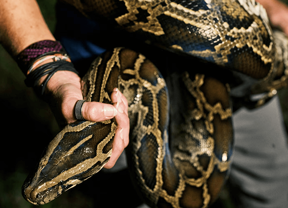
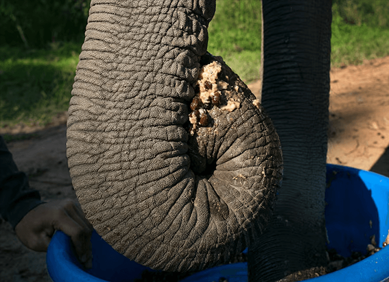

NATIONAL GEOGRAPHIC

Why Laos thinks this serpent god deserves UNESCO status
TRAVEL
In Laos, a legend holds that a handsome half-serpent, half-human water spirit known as a naga lures a beautiful weaver to be his bride in the depths of the Mekong River. Although you’ll see this dragon-like god everywhere in southeast Asia grinning from rooflines, twisting across temple murals, and forming the stair railings that lead into prayer halls the naga is a particularly essential motif in Laotian textiles.
Kiang Ounphaivong, a weaver at Ock Pop Tok, an artisan studio in Louangphabang, Laos, incorporates naga elements into every textile, just as her mother and grandmother did before her. “Maybe if I weave something really beautiful, the naga will marry me, too,” she laughs.
The naga is so significant in everyday Laotian life and textile making that the country thinks UNESCO should take note. This year, Laos nominated naga motifs in weaving for recognition on the organization’s Representative List of Intangible Cultural Heritage (ICH). This honorific recognizes the importance of beliefs, customs, and skills such as dancing, food preparation, and crafts intrinsic to specific cultures and places. Traditions are inscribed during a meeting each December in Paris; items added to the list in past years include Singapore street food, Portuguese fado music, and barkcloth making in Uganda.
The roots of naga
The people of Laos, a small landlocked country wedged between Thailand, Cambodia, Vietnam, China, and Myanmar, have been worshiping serpent spirits in one form or another for more than 2,000 years. Celebrated in craft, architecture, and festivals, the naga, or nak in Lao, unifies the country’s diverse ethnic groups there are at least 50 and bridges its enduring animist and Buddhist beliefs.
“Water spirits in the form of snakes, dragons, and crocodiles were worshiped among Laos’ Mon Khmer settlers as early as B.C. 2000,” says Stéphane Rennesson, an expert on nagas at the Laboratory of Ethnology and Comparative Sociology in Paris.
“Since the day we are born, we have heard stories about the naga as our ancestor and our protector. Every woman owns something with a naga on it,” says Viengkham Nanthavongdouangsy, a Vientiane-based weaver, designer, and member of the Lao Handicrafts Association. She worked with the Lao Ministry of Information, Culture, and Tourism on the application for UNESCO status.
Lao women dress in colorful, handwoven sinhs, or tube skirts, with elaborate naga patterns curling on their hemlines. It’s just one of many ways the serpent god is interwoven into the fabric of towns and villages, inseparable from daily life.
City of serpents
“Today, the naga is integrated in indigenous animist and contemporary Buddhist practices,” says Tara Gujadhur, cofounder of the Traditional Arts and Ethnology Centre (TAEC), a museum in Louangphabang where you can spot the river serpent in textile collection exhibits or among crafts for sale at the gift shop.
“Today, the naga is integrated in indigenous animist and contemporary Buddhist practices,” says Tara Gujadhur, cofounder of the Traditional Arts and Ethnology Centre (TAEC), a museum in Louangphabang where you can spot the river serpent in textile collection exhibits or among crafts for sale at the gift shop.
Nagas in weaving
Before Laos adopted a written language, textiles transmitted oral history and folktales from one generation to the next. In these stories, told in silk and cotton, the naga is a formidable protagonist, at once noble and treacherous, a guardian spirit capable of bestowing abundance or unleashing calamity.
In the past, “women wove complex motifs to show off their skill. Other women bought them because they showed their status,” says Nanthavongdouangsy. However, decades of protracted war and instability in the mid-20th century impacted silk production and access to high-quality weaving.
What’s intangible cultural heritage?
UNESCO (the cultural arm of the United Nations) began recognizing World Heritage sites in 1972, focusing on architectural masterpieces such as the Roman Coliseum, the Great Wall of China, and Machu Picchu.
Back then, UNESCO defined cultural heritage as structures made using ancient materials and methods. This narrow criteria overlooked the fact that culture can be expressed in myriad ways. In 2003, UNESCO broadened its parameters to include living or intangible expressions such as music, dance, storytelling, festivals, and crafts.
Comments :
- john Very good
- john Very good
Leave a Reply
Your email address will not be published. Required fields are marked*
Related posts:
-
 Is this paradise or a parking lot This Florida ecosystem is a battleground.
Is this paradise or a parking lot This Florida ecosystem is a battleground.MIAMIOn a recent summer evening, I stood in a parcel of one of the world’s rarest ecosystems, home to dozens of endemic, threatened, and even endangered species and I stepped on one. Oops.
View article -
Florida has a python problem are bounty hunters the solution
The air is thick and soupy. Pythons seem to like stormy, humid air, says professional hunter Amy Siewe, and Hurricane Idalia is about to make landfall in Florida.
View article -
$1,500 for 'naturally refined' coffee Here's what that phrase really means.
Fancy a cup of coffee with beans plucked from an elephant’s poop? That’s the promise of one of the world’s current priciest coffee options. Sold in two-serving packets for about $150, the brew’s served at luxury hotels and to VIP clients
View article